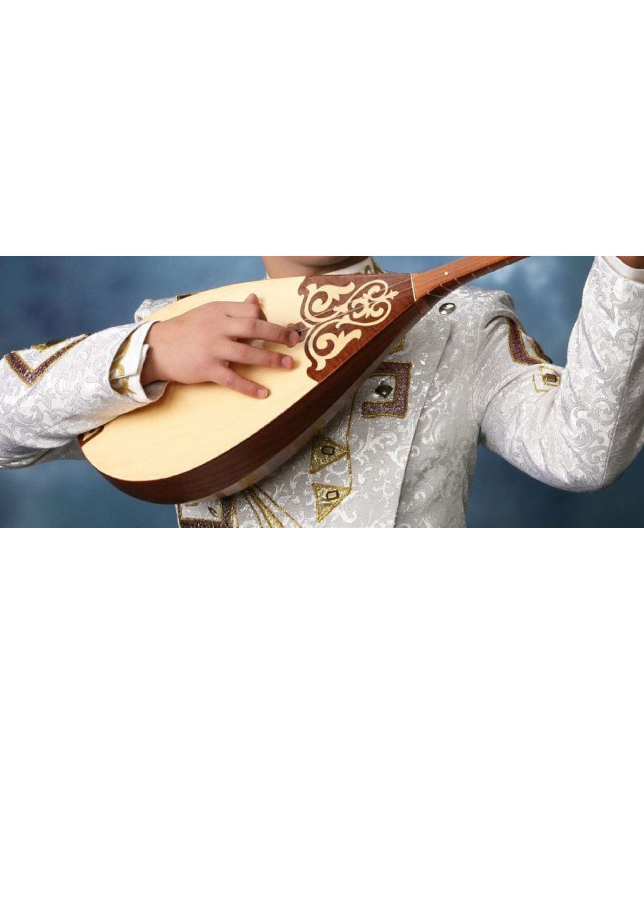

Домбыра — қазақ халқының ең көне және кең тараған екі шекті ішекті музыкалық аспабы. Ол қазақ мәдениетінде ерекше орын алады. Домбыраның көмегімен күйлер шертіліп, әндер сүйемелденеді.
Домбыра құрылымы 1 Шанағы: Домбыраның қорап тәрізді бөлігі, ол аспаптың негізгі резонаторы болып табылады. Әдетте ағаштан жасалады. Шанақтың формасы домалақ немесе сүйір болуы мүмкін. 2 Мойыны: Шанақтан бастап, пернелер бекітілген ұзын бөлігі. Мойынға арнайы пернелер тағылған, олар арқылы әртүрлі ноталар ойнайды. 3 Ішегі: Домбырада көбінесе екі ішек болады (кейбір аймақтарда үш ішекті домбыра да кездеседі). Ішектер малдың ішегінен жасалған немесе заманауи синтетикалық материалдардан дайындалады. 4 Пернелері: Домбыра мойнына тағылған пернелер дыбыс биіктігін реттейді. Қазақ домбырасында 7-ден 19-ға дейін перне болуы мүмкін.
